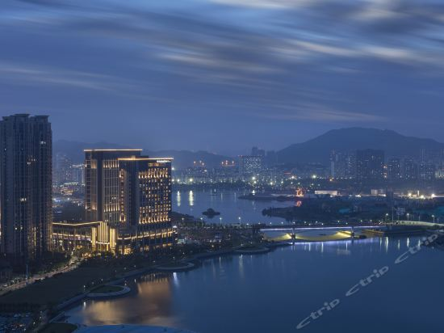

厦门正元希尔顿逸林酒店
来源：本网


厦门正元希尔顿逸林酒店位于厦门海沧区核心地带。酒店距离厦门高崎国际机场17公里，厦门北站25公里，厦蓉高速入口3公里，嵩屿码头4公里，地理位置优越，交通便利，宾客只需步行即可到达阿罗海城市广场及海沧市民公园。酒店屹立于美丽的海沧湖畔，将带给宾客无与伦比的入住体验。酒店还拥有4个别具一格的餐厅，包括以粤菜为主的御玺中餐厅；囊括世界各地美味的OPEN(开全日餐厅)；主打各地特色面食的NoDu(面聚轩)；呈现各式茗茶、环球美酒佳酿的大堂吧；为美食美酒爱好者带来全新难忘的味蕾体验。大型无柱设计豪华宴会厅—万悦厅面积达1000平方米，层高8米，可轻松容纳950位宾客；豪华新娘化妆间体贴助力精彩瞬间，专业婚礼管家服务及一站式婚宴服务为宾客量身打造您的动人时刻。6个灵活多功能厅设计优雅，配备齐全，是举办各类会议及宴会的理想场所。设施完善的健身中心、室内恒温泳池、行政酒廊都能让宾客在商务旅行或休闲旅行中畅想健康与惬意。